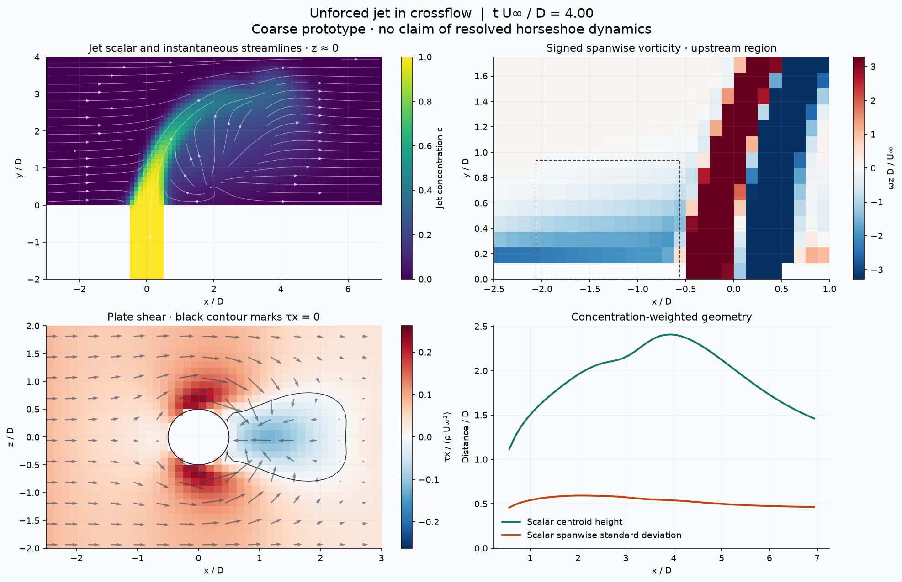
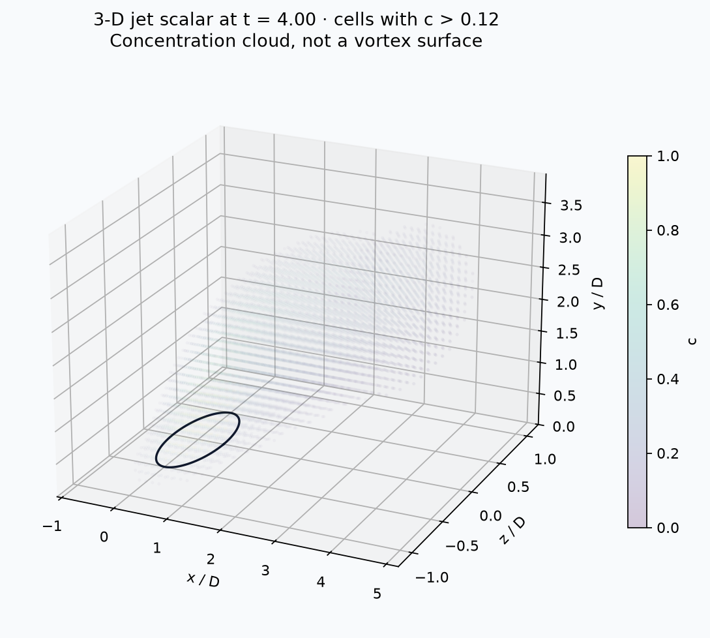
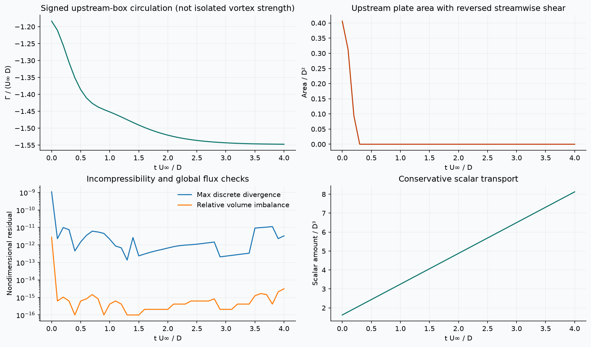

COMPUTATIONAL FLUID DYNAMICS · RESEARCH PROTOTYPE
Unforced transverse jet
A three-dimensional, incompressible jet issuing through a pipe into a crossflow boundary layer. The initial focus is the upstream wall interaction and the development of the jet.
8 cells / DGrid
82,752Fluid cells
4 D / U∞Final time
1.08e-09Max sampled divergence
1.78e-13Scalar balance error
This run verifies the computational workflow. Its grid, staircase pipe, short duration, and donor-cell scalar transport do not establish resolved horseshoe dynamics or quantitative mixing. Negative wall shear is evidence of local reversal, not proof of a coherent horseshoe vortex.
Follow the flow in time
Color scales stay fixed across frames. Blank vorticity pixels exclude solid-adjacent derivative stencils. Streamlines are instantaneous, not particle trajectories.

Three-dimensional concentration field

Flow diagnostics and conservation

Last sampled volume-flow mismatch: 3.14e-15. Scalar range: 3.25446e-33–1. Time-weighted averages cover 2.000 D/U∞; stationarity has not been established.
Reproducible data
Case parameters · Run provenance and checks · Diagnostic time series · Final 3-D fields · Time-weighted mean fields
Axes: x along the crossflow, y upward from the plate, z spanwise. Lengths use D; velocities use U∞. The nozzle is centered at x = z = 0. No actuator is included.